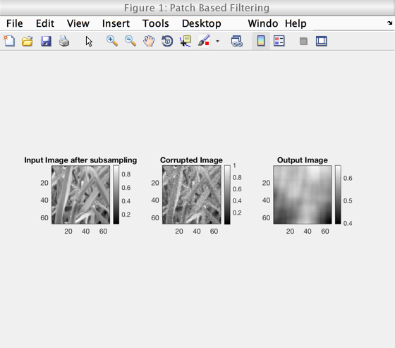
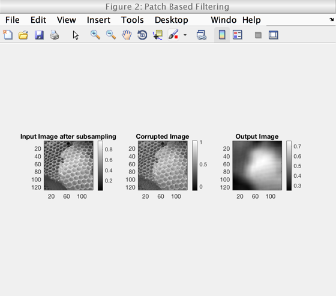
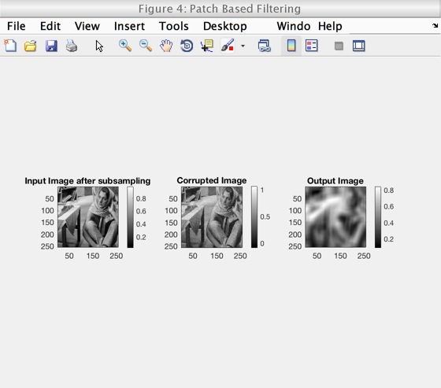
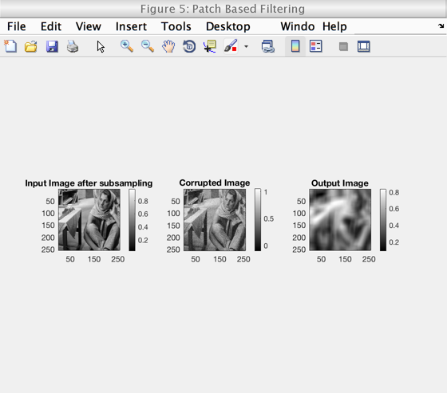
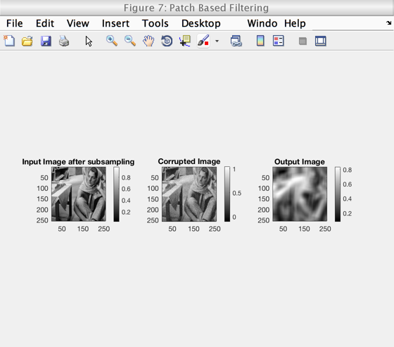

Contents
Report - Patch based filtering
tic;
Mainscript Code -
The parameters were chosen as follows:
Standard deviation = 10.5 Note that for the give values of window size and oatch size, image blurring was was observed.
input_path = '../data/grass.png'; image1 = im2double(imread(input_path)); image1 = imgaussfilt(image1, 0.66); image1 = image1(1:2:size(image1,1), 1:2:size(image1,2)); output = myPatchBasedFiltering(image1, 10.5); difference = output - image1; RMSD = sqrt(sum(difference(:).^2))/(size(output,1)*size(output,2)); fprintf('RMSD = %f \n', RMSD); %imshow(output); input_path = '../data/honeyCombReal.png'; image2 = im2double(imread(input_path)); image2 = imgaussfilt(image2, 0.66); image2 = image2(1:2:size(image2,1), 1:2:size(image2,2)); output = myPatchBasedFiltering(image2, 10.5); difference = output - image2; RMSD = sqrt(sum(difference(:).^2))/(size(output,1)*size(output,2)); fprintf('RMSD = %f \n', RMSD); load('../data/barbara.mat') image3 = imageOrig/100.0; image3 = imgaussfilt(image3, 0.66); image3 = image3(1:2:size(image3,1), 1:2:size(image3,2)); output = myPatchBasedFiltering(image3, 10.5); difference = output - image3; RMSD = sqrt(sum(difference(:).^2))/(size(output,1)*size(output,2)); fprintf('RMSD = %f \n', RMSD);
RMSD = 0.001798 RMSD = 0.000892 RMSD = 0.000513 
For sigma = 10.5*1.1 = 11.55
output = myPatchBasedFiltering(image3,11.55 ); difference = output - image3; RMSD = sqrt(sum(difference(:).^2))/(size(output,1)*size(output,2)); fprintf('RMSD = %f \n', RMSD); output = myPatchBasedFiltering(image3, 11.55); difference = output - image3; RMSD = sqrt(sum(difference(:).^2))/(size(output,1)*size(output,2)); fprintf('RMSD = %f \n', RMSD); output = myPatchBasedFiltering(image3, 11.55); difference = output - image3; RMSD = sqrt(sum(difference(:).^2))/(size(output,1)*size(output,2)); fprintf('RMSD = %f \n', RMSD);
RMSD = 0.000513 RMSD = 0.000513 RMSD = 0.000513 
For sigma = 10.5*1.1 = 9.45
output = myPatchBasedFiltering(image3,9.45 ); difference = output - image3; RMSD = sqrt(sum(difference(:).^2))/(size(output,1)*size(output,2)); fprintf('RMSD = %f \n', RMSD); output = myPatchBasedFiltering(image3, 9.45); difference = output - image3; RMSD = sqrt(sum(difference(:).^2))/(size(output,1)*size(output,2)); fprintf('RMSD = %f \n', RMSD); output = myPatchBasedFiltering(image3, 9.45); difference = output - image3; RMSD = sqrt(sum(difference(:).^2))/(size(output,1)*size(output,2)); fprintf('RMSD = %f \n', RMSD); toc;
RMSD = 0.000513 RMSD = 0.000514 RMSD = 0.000513 Elapsed time is 1151.546332 seconds.